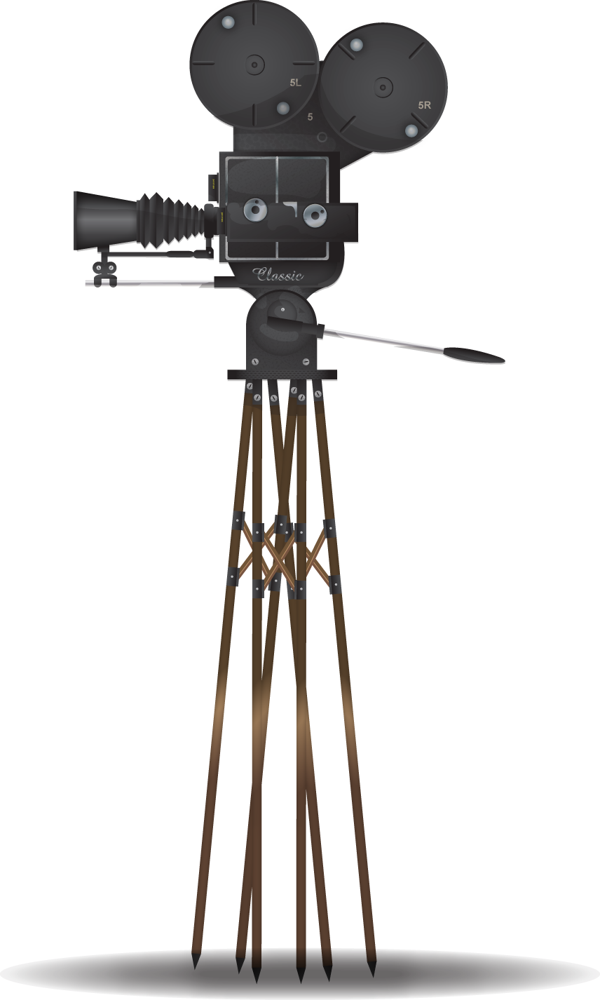

Alfred Williams
Video Game and Movie Reviews

Welcome!
Hello! My name is Alfred Williams. I am a passionate fan of video games and movies. The first video game I played was Pong for the Atari 2600. Shortly after,
I purchased an Intellivision game console. My favorite game on this console is Tron Deadly Discs. The video game crash kept me wondering when the next "big thing"
would be released in the realm of video game consoles. Soon after, Nintendo and Sega were competing for the top spot in video game consoles sold. While some players
sought to argue one system was better than another, I purchased both systems. In my opinion, the games help the company sell systems. There are numerous good games
available on several platforms, including PC's.
The first movie I absolutely fell in love with is Star Wars: A New Hope. I have seen several movies on the big screen, including some old Godzilla movies released in
the early to mid 1970's. However, the movie effects used in Star Wars gave this movie an addition dimension of realism. The techniques have advanced over the years
and ILM (Industrial Light & Magic) have incorperated digital effects that are top of the line. Though there is some debate around the use of the digital reproduction
of Govenor Tarkin and Princess Leia in Rogue One, ILM has "taken a big step into a larger world."